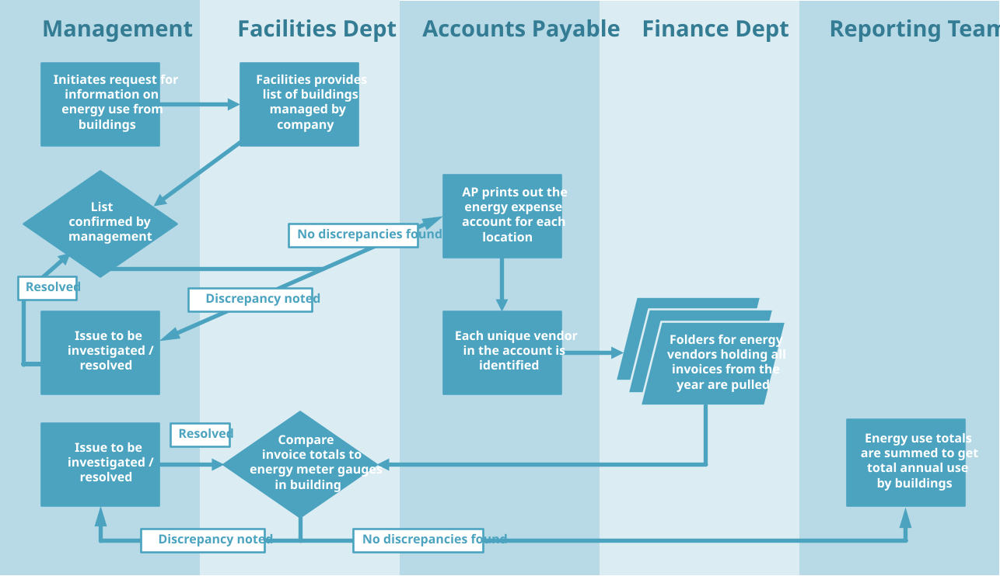

3. Zukunftsfähigkeit systematisch anstreben
Ein disziplinierter Ansatz zur Umsetzung und Dokumentation von Richtlinien und internen Kontrollprozessen ist in jedem Unternehmen wichtig, da er dem Management dabei hilft, die Schritte, die unternommen werden, um ein bestimmtes Ergebnis zu erzielen, systematisch zu verfolgen, zu überprüfen und zu ändern. Die Übernahme des Future-Fit Business Benchmark ist keine Ausnahme.
Dieses Kapitel beschreibt, was formelle Richtlinien und interne Kontrollen sind, und bietet Anleitungen zu deren Erstellung, Umsetzung und Dokumentation.
3.1 Was sind interne Kontrollen?
Dieser Abschnitt bezieht sich auf mehrere Begriffe, deren Bedeutung möglicherweise nicht sofort ersichtlich ist:
Richtlinien sind übergeordnete Regeln oder allgemeine Konzepte, die dazu dienen, die Handlungen von Mitarbeitern unter bestimmten Umständen zu leiten oder zu beeinflussen.
Verfahren sind eine Reihe von Schritten, die beschreiben, wie Mitarbeiter konsequent auf eine Situation reagieren oder eine Aufgabe angehen sollten.
Kontrollen sind die Mittel, mit denen das Management Risiken angeht, indem es die Maßnahmen bestimmter Unternehmensbereiche so beeinflusst, dass sie mit den Zielen des Unternehmens in Einklang stehen. Es handelt sich um Checks and Balances, um sicherzustellen, dass das Unternehmen auf Kurs bleibt. „Interne“ Kontrollen beziehen sich auf diese Kontrollen und Abwägungen, die innerhalb des Unternehmens selbst stattfinden und nicht von Dritten auferlegt werden.
Kontrollen, Richtlinien und Verfahren
Es kann einige Überschneidungen zwischen diesen Konzepten geben. Richtlinien und Verfahren können als interne Kontrollen in einem Unternehmen verwendet werden, aber nicht jede Richtlinie oder jedes Verfahren ist eine Kontrolle.
Beispiel: Ein Unternehmen möchte eine Kontrolle einführen, um den Verkauf fehlerhafter Produkte zu verhindern, und entwickelt daher eine Richtlinie, die besagt: „Kein Produkt verlässt das Werk ohne Prüfung.“ Um dieses Ziel zu erreichen, implementiert das Unternehmen ein Verfahren, bei dem ein:e Vorgesetzte:r die Funktionalität jedes Produkts überprüft, bevor es verpackt und versendet wird.
Was Kontrollen wirksam macht, hängt von der Branche eines Unternehmens und anderen Umständen ab. Es gibt jedoch einige allgemein anwendbare Aspekte wirksamer Kontrollen, die Unternehmen dabei helfen können, die gewünschten Ergebnisse zu erzielen.
Die folgenden Leitlinien sollen Unternehmen dabei helfen, festzustellen, ob die von ihnen eingerichteten Kontrollen ausreichend sind, und Richtlinien zu entwerfen und/oder zu bewerten, die darauf abzielen, die Maßnahmen des Unternehmens im Hinblick auf Future-Fit-Ergebnisse zu steuern. Diese Informationen sollten insbesondere für jedes Unternehmen hilfreich sein, das seine Future-Fit-Leistungen oder -Prozesse eventuell von einem Dritten sicherstellen lassen möchte.
3.2 Wozu dienen interne Kontrollen?
Interne Kontrollen können einzelnen Mitarbeitenden und Abteilungen helfen, die Ausrichtung auf die Unternehmensziele aufrechtzuerhalten, dem Management Vertrauen in die Informationen geben, die es für strategische Entscheidungen verwendet, und dafür sorgen, dass das Unternehmen effizient und effektiv arbeitet.
Dies gilt insbesondere, wenn es um das Streben nach Zukunftsfähigkeit geht, denn um die für die Zukunftsfähigkeit erforderlichen sozialen und ökologischen Leistungsniveaus zu erreichen, sind wahrscheinlich konzertierte und koordinierte Maßnahmen im gesamten Unternehmen und über einen längeren Zeitraum erforderlich. Der Einsatz interner Kontrollen und die Festlegung formaler Richtlinien stellen sicher, dass die Mitarbeiter:innen die Ziele des Unternehmens im Allgemeinen verstehen, und tragen dazu bei, die Rolle ihrer täglichen Verantwortung bei der Erreichung dieser übergeordneten Ziele zu klären.
3.3 Arten von Kontrollen
Direktive Kontrollen
Direktive Kontrollen sollen sicherstellen, dass die Mitarbeiter:innen die Ziele des Unternehmens verstehen und sich an ihnen orientieren. Sie sind aktiv, bevor die Aktivität stattfindet, auf die sie sich beziehen. Beispiele für weisungsgebundene Kontrollen sind Stellenbeschreibungen, die Festlegung von Abteilungszielen und Unternehmensleitbilder.
Vorbeugende Kontrollen
Diese Kontrollen sollen die Wahrscheinlichkeit verringern, dass Fehler auftreten. Sie sind aktiv, während die Aktivität, auf die sie sich beziehen, stattfindet, was bedeutet, dass sie Teil des Tagesgeschäfts eines Unternehmens sind. Beispiele für präventive Kontrollen sind Genehmigungs- und Genehmigungsprozesse, die Überprüfung von Berechnungen vor der Veröffentlichung der resultierenden Zahlen und die Sicherstellung einer angemessenen Aufgabentrennung im Unternehmen (siehe Hinweis unten).
Ex-Post Kontrollen
Mit diesen Kontrollen soll festgestellt werden, ob der betreffende Prozess wie vorgesehen angewendet wird. Sie sind aktiv, nachdem die entsprechende Aktivität stattgefunden hat. Mithilfe von ex-post Kontrollen werden Fehler identifiziert, sodass Unternehmen Korrekturen vornehmen und die Auswirkungen eines Fehlers begrenzen können. Beispiele für diese Kontrollen umfassen die Überprüfung der Kalibrierung von Messinstrumenten am Ende einer Schicht oder die Durchführung stichprobenartiger Kontrollen, um zu sehen, wie gemessene Werte im Vergleich zu Prognosen abschneiden.
Aufgabentrennung
Im Zusammenhang mit internen Kontrollen bezieht sich die Aufgabentrennung auf die Benennung verschiedener Akteure im Kontrollprozess, die für wichtige Schritte auf dem Weg verantwortlich sind, um Fehler zu verhindern und Betrug abzuschrecken. Zu den zu trennenden Schritten gehören die Verwahrung von Vermögenswerten, die Genehmigungsbefugnis und die Verantwortung für die Führung von Aufzeichnungen.
Wenn beispielsweise berechnet wird, ob den Mitarbeitenden ein existenzsichernder Lohn gezahlt wird, könnte Mitarbeiter:in A Zugriff auf die Lohn- und Gehaltsunterlagen der/des Mitarbeiter:s haben (Verwahrung), Mitarbeiter:in B wäre für die Berechnung der existenzsichernden Lohnschwellen in den Bereichen verantwortlich, in denen das Unternehmen tätig ist (Aufzeichnung), und Mitarbeiter:in C würde die Arbeit prüfen und zur Aufnahme in einen Managementbericht genehmigen (Genehmigung).
3.4 Schritte zur Schaffung effektiver interner Kontrollen
Wenn neue interne Kontrollen erforderlich sind, um das aktuelle Risikoumfeld zu stützen oder auf Veränderungen im Unternehmen zu reagieren, können die folgenden Schritte dazu beitragen, sicherzustellen, dass die neuen Kontrollen dem Unternehmen wirksam dabei helfen, seine Ziele zu erreichen.
Planen Sie die erforderlichen Kontrollen
Identifizieren Sie den Stakeholder, den Sie beeinflussen möchten.
- Versuchen Sie, die Produktqualität für Kundinnen und Kunden sicherzustellen, Arbeitsunfälle für Mitarbeiter:innen zu verhindern, die Datengenauigkeit für das Management zu erhöhen oder Emissionen für die Umwelt und/oder lokale Gemeinschaften zu minimieren?
Definieren Sie klar das Ergebnis das Sie für diesen Stakeholder beeinflussen möchten.
- Möchten Sie verhindern, dass ein negatives Ergebnis eintritt? Ein positives Verhalten fördern? Die Variabilität einer bereitgestellten Dienstleistung verringern?
Identifizieren Sie alle Risiken die die Erzielung dieser Ergebnisse gefährden.
- Z.B. externe Umweltfaktoren, inkonsistente Herangehensweisen an ähnliche Probleme, mangelnde Präzision von Maschinen oder Mitarbeitern.
Binden Sie die Ziel-Stakeholder-Gruppe aktiv während des Kontrollerstellungsprozesses ein oder wenn Änderungen vorgenommen werden, die sich auf die Erfahrung der Stakeholder auswirken könnten.
- Z.B. Bei einer Richtlinie für Mitarbeitergesundheit müssen die Mitarbeiter:innen oder ihre Vertreter:innen in die Diskussion während der Richtlinienentwicklung einbezogen werden.
Bestimmen Sie welche Risiken durch den Einsatz von Kontrollen gemindert werden können.
Optionale Anleitung von Planungskontrollen
Erstellen und dokumentieren Sie Notfallpläne, um zu verhindern, dass der Zielerreichungsfortschritt durch die Abwesenheit wichtiger Mitarbeiter:innen, den Ausfall von Geräten oder Probleme mit Dritten unterbrochen wird.
Setzen Sie die geplanten Kontrollen um
- Entwerfen und implementieren Sie Kontrollen, um die identifizierten Risiken zu mindern.
- Planen Sie Zeit und Budget für die Ergreifung von Korrekturmaßnahmen ein, falls die Gefahr besteht, dass Ziele verfehlt werden.
- Beschreiben und dokumentieren Sie die Ziele jeder Kontrolle und stellen Sie diese den Mitarbeitenden/Interessengruppen zur Verfügung, die für deren Umsetzung verantwortlich sind.
- Definieren Sie klar die Verantwortungslinie für die Ergebnisse jeder Kontrolle, einschließlich eines Mitglieds des Führungsteams, das letztendlich für den Erfolg der Initiative verantwortlich ist.
Optionale Anleitung zur Implementierung interner Kontrollen
Stellen Sie sicher, dass dem Projektteam ausreichend Ressourcen zur Verfügung stehen269 um in der Lage zu sein, die erforderlichen Massnahmen erfolgreich zu designen, zu implementieren und zu betreiben.
Geben Sie Ihren Mitarbeitenden die nötigen Informationen und/oder Schulungen, damit sie ihre eigenen Handlungen im Kontext ihrer Auswirkungen auf die gesamte Organisation sehen können.
Kommunizieren Sie Ziele über das Kernprojektteam hinaus, damit andere relevante Gruppen im Unternehmen darauf aufmerksam werden, um interne Widerstände und Doppelarbeit zu minimieren.
Überwachen Sie die Leistung und passen Sie diese bei Bedarf an
- Dokumentieren Sie qualitative und quantitative Ergebnisse interner Kontrollen, die regelmäßig vom Management überprüft werden.
- Ergreifen Sie geeignete Maßnahmen, um die Kontrollen nach Bedarf anzupassen, wenn sich herausstellt, dass sie nicht wie vorgesehen funktionieren oder wenn Änderungen an der Betriebsumgebung ihre Wirksamkeit beeinträchtigen könnten.
3.5 Anleitung zur Abbildung von Prozessen und internen Kontrollen
Organisationsprozesse abbilden
Bei Geschäftsprozessen, die zur Messung von Future-Fit-Indikatoren verwendet werden oder deren Ergebnisse anhand dieser gemessen werden, kann die Dokumentation der im Prozess beteiligten Schritte hilfreich sein. Das Aufschreiben der Aktionen von der Einleitung bis zum Endergebnis kann entweder in narrativer Form, durch die Erstellung von Diagrammen oder idealerweise als Kombination aus beidem erfolgen. Sobald alle Schritte im Prozess geplant sind, sollten die internen Kontrollen identifiziert und hervorgehoben werden, die den Prozess auf Kurs halten und das Auftreten von Fehlern verhindern. Durch die formelle Dokumentation interner Kontrollen können Manager:innen auf diese Weise beurteilen, ob der aktuelle Ansatz die beste Möglichkeit zur Bewältigung der relevanten Risiken darstellt, und helfen, etwaige Lücken oder Redundanzen in der Kontrollstruktur zu erkennen.
Durch die klare Dokumentation der Unternehmensprozesse wird es auch für Personen, die mit dem Unternehmen nicht vertraut sind, einfacher, schnell zu verstehen, welche Abteilungen, Systeme und Arbeitsfunktionen an den einzelnen Schritten beteiligt sind, und Bereiche zu identifizieren, in denen etwas schief gehen könnte. Ebenfalls hilft die Dokumentation zu erkennen, um welche internen Kontrollen es sich handelt, die bei Maßnahmen ergriffen werden, um potenziellen Problemen vorzubeugen oder sie im Falle ihres Auftretens schnell zu erkennen. Dies ist insbesondere für neue Mitarbeiter hilfreich, um zu verstehen, wie das Unternehmen funktioniert und wo sie hineinpassen, und trägt außerdem dazu bei, Prüfungsaufträge effizienter und effektiver zu gestalten.270
Erstellen von Flussdiagrammen/Flowcharts
Eine nützliche Möglichkeit zur Darstellung von Geschäftsprozessen besteht darin, ein Flussdiagramm zu erstellen, das die Abfolge der beteiligten Aktivitäten und die Ereignisse an Entscheidungspunkten zeigt. Um ein Flussdiagramm zu erstellen, ist es oft am einfachsten, vom Endergebnis des Prozesses auszugehen und sich dann wieder zum Anfang vorzuarbeiten. Identifizieren Sie alle durchgeführten Aktivitäten, durchgeführten Messungen, beteiligten Personen und Eingaben auf dem Weg, bis Sie zur ersten Aktion gelangen, die den Prozess in Gang setzt. Diese Diagramme sollten sowohl die Personen und Abteilungen einbeziehen, die in jeder Phase aktiv beteiligt sind oder die Hauptverantwortung tragen, als auch diejenigen, die Eingaben liefern, Produkte erhalten, Dokumente lagern oder auf andere Weise auf dem Weg davon betroffen sind.
Sobald die einzelnen Teile des Prozesses identifiziert wurden, sollten sie in sequentieller Reihenfolge organisiert werden, wobei Pfeile den Fortschritt von einem Schritt zum nächsten anzeigen. Wenn ein Schritt abhängig vom Ergebnis einer Entscheidung oder Prüfung zu zwei oder mehr unterschiedlichen Ergebnissen führen kann, sollte jeder mögliche Weg zusammen mit den Gründen dafür aufgezeigt werden, warum der Prozess diesem bestimmten Weg folgen würde.
Um für zusätzliche Klarheit zu sorgen, kann das Flussdiagramm so gezeichnet werden, dass die jeder teilnehmenden Abteilung oder Einzelperson zugewiesenen Schritte klar gruppiert sind. Dies kann erreicht werden, indem Spalten oder Zeilen für jeden einzelnen Teilnehmer abgetrennt werden und so „Wege“ erstellt werden, die ihre Beteiligung zeigen. Benutzer können diese Flussdiagramme außerdem durch eine schriftliche Erzählung ergänzen, um zu erklären, was auf dem Weg passiert (siehe Abbildung 1 als Beispiel). Es gibt kostenlose Leitfäden, die online zu finden sind271, sowie spezialisierte Flussdiagramm-Programme, die käuflich erworben werden können.
Abbildung 1: Beispiel-Flussdiagramm, das den Prozess zur Bestimmung des Energieverbrauchs von Gebäuden zeigt.

Unternehmen sollten darauf abzielen, den Prozess so abzubilden, wie er in der Realität abläuft, und nicht, wie er „auf dem Papier“ oder „in der Theorie“ funktioniert. Dies wird den Beteiligten helfen, wirklich nützliche Erkenntnisse aus dem Prozess zu gewinnen. Um weiterhin sicherzustellen, dass das Unternehmen über eine genaue Darstellung des Prozesses verfügt, sollte das endgültige Flussdiagramm immer mit den verschiedenen am Prozess beteiligten Funktionen und Abteilungen überprüft werden.
Es stehen viele Ressourcen zu den Mechanismen der Erstellung eines Flussdiagramms zur Verfügung, z. B. zu den zu verwendenden Formen, verschiedenen Formatoptionen und zur Erstellung von Spalten, um die Verantwortung für verschiedene Aspekte anzuzeigen. Es gibt kostenlose Ratgeber, die online gefunden werden können, sowie spezielle Flussdiagramm-Designprogramme, die zum Kauf angeboten werden.
3.6 Auswertung der Kontrollen
Wenn Unternehmen die Benchmark zum ersten Mal anwenden, lautet eine häufige Frage für Ziele, die richtlinienbasierte Indikatoren verwenden: „Wir verwenden ‚Kontrolle X‘, reicht das aus, um die Kriterien zu erfüllen?“
Um Unternehmen dabei zu helfen, festzustellen, ob ihre internen Kontrollen ausreichend sind, und um sicherzustellen, dass die Benchmark konsequent angewendet wird, besteht ein Ansatz darin, für jedes relevante Benchmark-Ziel richtungsweisende, präventive und aufdeckende Kontrollen zu implementieren.
Auch wenn es möglicherweise nicht immer angemessen ist, jede dieser internen Kontrollarten für ein bestimmtes Kriterium oder Ziel einzurichten, bedeutet das Streben danach, dass die Mitarbeiter:innen für jedes in der Benchmark beschriebene Ergebnis: (a) wissen, warum sie verpflichtet sind, sich an eine Richtlinie zu halten oder ein Verfahren zu befolgen, (b) Sicherheitsmaßnahmen unterliegen, die dazu beitragen, ein Verfehlen des angestrebten Ziels zu verhindern, und (c) über Kontrollen und Gegenmaßnahmen verfügen, um Bereiche zu identifizieren, in denen die Kontrollen unzureichend sind.
Dies bedeutet auch, dass das Unternehmen gut aufgestellt ist, um eine umfassende und sichere Antwort zu geben, wenn der Vorstand des Unternehmens oder externe Stakeholder fragen, was getan wird, um ein bestimmtes Future-Fit-Ziel zu verfolgen. Ebenso ist für Unternehmen, die eine Gewähr für ihre Berichte anstreben, der Nachweis der Wirksamkeit der im Berichtszeitraum eingesetzten internen Kontrollen von entscheidender Bedeutung. Siehe den Abschnitt über Sicherheit: Weitere Einzelheiten zur Erlangung von Sicherheit über Benchmark-Daten finden Sie hier.
3.7 Was ist eine formelle Richtlinie?
Eine formelle Richtlinie ist ein schriftliches Dokument, das von der Personalabteilung oder der Unternehmensleitung genehmigt wurde. Durch die Formalisierung von Richtlinien kann ein Unternehmen einen einheitlichen Ansatz für ein bestimmtes Thema oder eine bestimmte Situation verfolgen. Dies trägt dazu bei, sicherzustellen, dass die entsprechende Situation konsequent angegangen wird, wenn sie eintritt. Wenn Richtlinien fehlen oder nur informell bestehen, besteht eine höhere Wahrscheinlichkeit, dass Schritte übersehen werden, Probleme möglicherweise ignoriert werden und man sich stärker auf das individuelle Urteilsvermögen der Mitarbeiter verlässt.
Ein häufiges Beispiel ist der Umgang mit Arbeitnehmeranliegen. Die meisten Unternehmen, die sich zuvor noch nicht aktiv mit den Bedenken ihrer Mitarbeiter befasst haben, werden antworten, dass es eine informelle Richtlinie gibt, nach der ein:e Mitarbeiter:in Probleme gegenüber seiner/seinem Vorgesetzte:n anspricht und dieder Vorgesetzte das Problem entweder löst oder eskaliert. Der Grund dafür, dass in der Benchmark, formelle Richtlinien erforderlich sind, besteht darin, dass in diesem Beispiel die Managerin bzw. der Manager, der die Bedenken entgegennimmt, ein Problem ablehnen kann, das er für unwichtig hält, das aber für die Miarbeiterin bzw. den Mitarbeiter, die/der es anspricht, oder für das Unternehmen selbst von großer Bedeutung sein könnte. Formelle Richtlinien sind ein wichtiger Schritt, um im gesamten Unternehmen konsistente Ergebnisse zu erzielen.
3.8 Nützliche Links
COSO (Komitee der Sponsor-Organisationen der Treadway Commission)
COSO wurde 1985 durch Beiträge von fünf großen Buchhaltungs-, Finanz- und Wirtschaftsprüfungsagenturen in den USA gegründet, um einer Reihe von Interessengruppen Leitlinien zur Finanzverwaltung und Betrugsprävention bereitzustellen. COSO ist ein anerkannter Vordenker zum Thema interne Kontrollen und stellt einige kostenlose Materialien sowie ausführlichere Anleitungen zum Kauf bereit Webseite.
Anwendungsleitfaden für ISO 9001:2015
ISO 9001 verwendet auch einen prozessbasierten Ansatz zur Gestaltung eines Qualitätsmanagementsystems. Der darin beschriebene Ansatz: Planen, Durchführen, Prüfen, Handeln trug zu den hier angebotenen Leitlinien bei [198].
KPMG – Interne Kontrolle: Ein praktischer Leitfaden
Im Jahr 1999 hat KPMG einen Leitfaden herausgegeben um Unternehmen dabei zu helfen, die Auswirkungen des vom Institute of Chartered Accountants of England and Wales (ICAEW) erstellten „Turnbull Report“ (Leitfaden für Direktoren zum Combined Code) zu verstehen und darauf zu reagieren [199]. Die Beschreibungen der Ziele interner Kontrollen und der Kontext für ihre Verwendung haben die Beschreibungen in diesem Abschnitt beeinflusst.
Bibliographie
„Projektteam“ bezieht sich auf die Person(en), die für die Ausführung der Aufgaben verantwortlich ist/sind, die zur Erreichung jedes Ziels erforderlich sind.↩︎
Siehe den Abschnitt über Sicherheit Weitere Informationen darüber, was Unternehmen tun können, um sich auf die Sicherstellung ihrer Future-Fit-Daten vorzubereiten.↩︎
Siehe zum Beispiel “Systembasierte Audits” aus pempal.org (eine von der Weltbank und dem britischen FCDO unterstützte Lernseite), “Flussdiagramme für Prüfungszwecke” von der University of Mississippi, oder “Praktisches Flussdiagramm für Wirtschaftsprüfer:innen” vom Institut für Interne Revision.↩︎